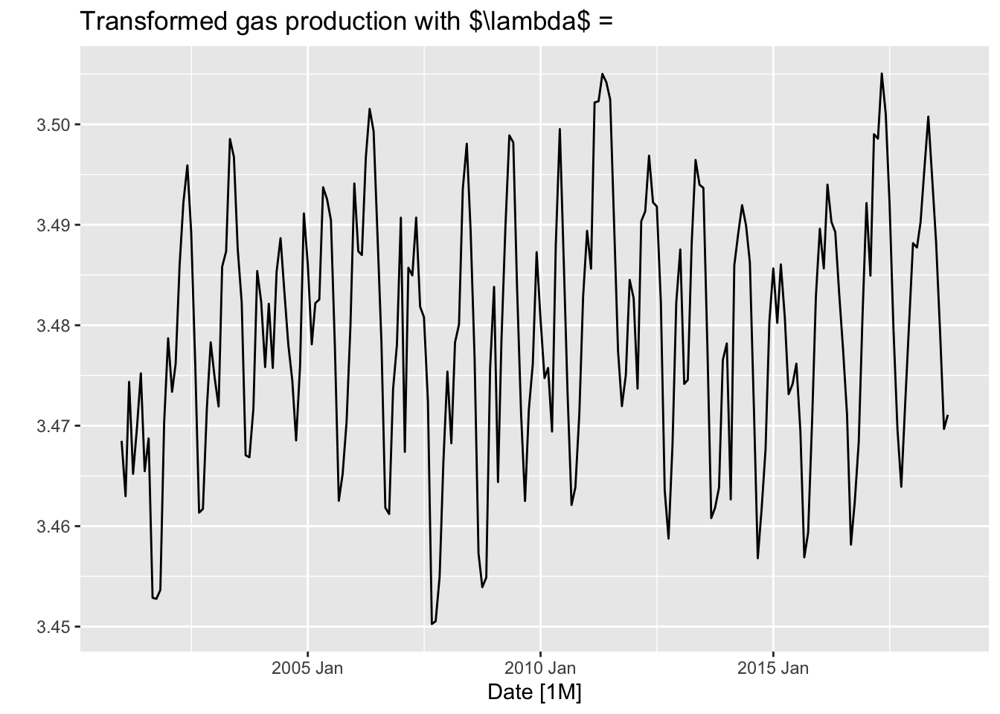
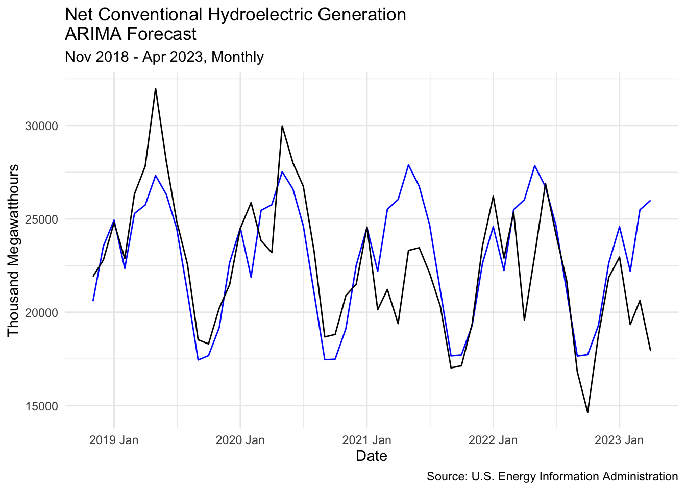
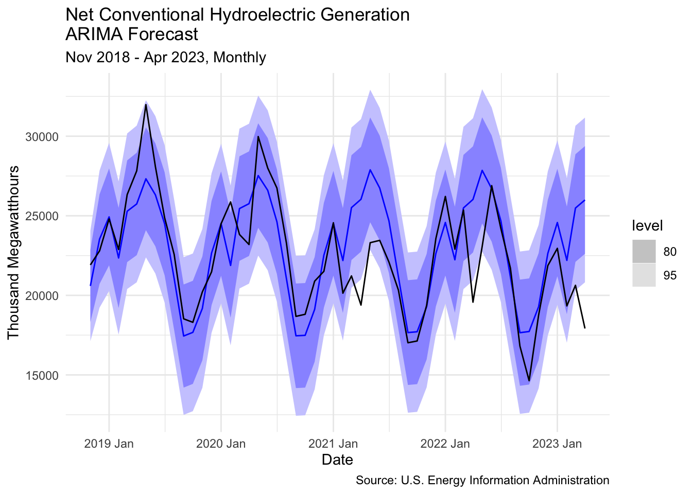
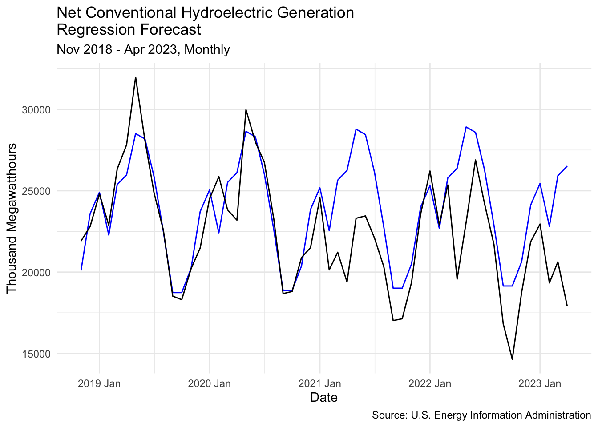
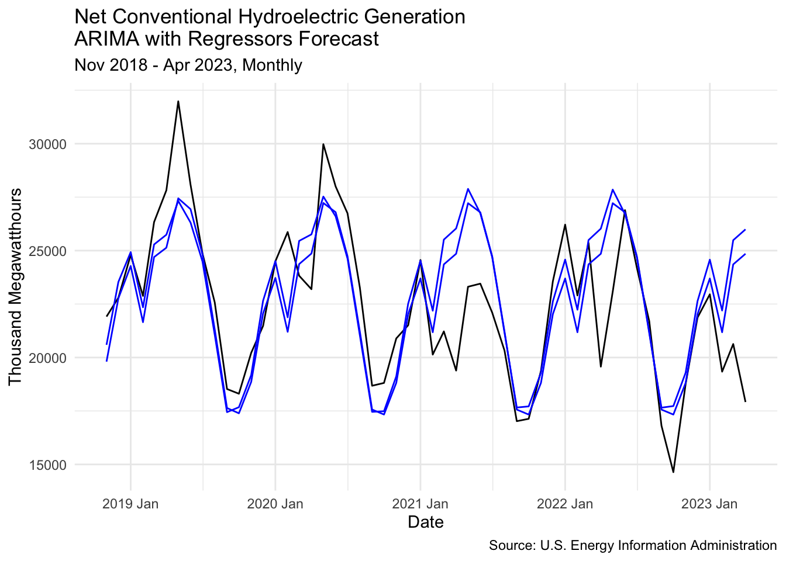

This is an R Markdown document. Markdown is a simple formatting syntax for authoring HTML, PDF, and MS Word documents. For more details on using R Markdown see http://rmarkdown.rstudio.com.
When you click the Knit button a document will be generated that includes both content as well as the output of any embedded R code chunks within the document. You can embed an R code chunk like this:
Rows: 268 Columns: 2
── Column specification ────────────────────────────────────────────────────────
Delimiter: ","
chr (1): Month
dbl (1): conventional hydroelectric thousand megawatthours
ℹ Use `spec()` to retrieve the full column specification for this data.
ℹ Specify the column types or set `show_col_types = FALSE` to quiet this message.
I import the data on net energy generation of electricity from the conventional hydroelectric sources.
head(net_gen)
# A tibble: 6 × 2
Month `conventional hydroelectric thousand megawatthours`
<chr> <dbl>
1 Apr 2023 17917.
2 Mar 2023 20630.
3 Feb 2023 19338.
4 Jan 2023 22954.
5 Dec 2022 21870.
6 Nov 2022 18764.
I estimate Naive, Seasonal Naive, Drift, and two ETS models. There are two ETS models because the optimal ETS() (the default one) seems to be underperforming, since it chooses no trend. I add ETS(A,Ad,M) since it seems to increase forecast accuracy.
A mable: 1 x 5 Naive Season_Naive Drift ETSopt ETS 1 <ETS(M,N,A)> <ETS(A,Ad,M)>
accuracy(net_gen.fit)
# A tibble: 5 × 10
.model .type ME RMSE MAE MPE MAPE MASE RMSSE ACF1
<chr> <chr> <dbl> <dbl> <dbl> <dbl> <dbl> <dbl> <dbl> <dbl>
1 Naive Training -3.20e+ 1 2665. 2253. -0.784 9.70 1.25 1.08 0.147
2 Season_Naive Training -1.14e+ 3 2478. 1809. -5.51 8.19 1 1 0.523
3 Drift Training -1.39e-12 2665. 2255. -0.643 9.71 1.25 1.08 0.147
4 ETSopt Training 1.07e+ 1 1312. 943. -0.118 3.98 0.521 0.529 -0.0589
5 ETS Training 1.84e+ 0 1295. 1027. -0.143 4.34 0.568 0.522 0.131
Here is a closer look at the actual observations and the forecast. As we can see, visually, SNaive and ETS models fit better. I use accuracy() function to check which model fitted unseen data the best.
net_gen.fc %>%accuracy(net_gen2)
# A tibble: 5 × 10
.model .type ME RMSE MAE MPE MAPE MASE RMSSE ACF1
<chr> <chr> <dbl> <dbl> <dbl> <dbl> <dbl> <dbl> <dbl> <dbl>
1 Drift Test -1863. 3756. 2981. -11.5 15.8 1.65 1.52 0.412
2 ETS Test -2260. 3323. 2561. -11.9 13.1 1.42 1.34 0.198
3 ETSopt Test -3538. 4312. 3600. -18.1 18.4 1.99 1.74 0.235
4 Naive Test -2134. 3964. 3185. -12.9 16.9 1.76 1.60 0.427
5 Season_Naive Test 372. 1952. 1585. 0.685 7.25 0.876 0.788 0.542
Using RMSE and MAE as metrics, we can observe that Seasonal Naive, surprisingly, has the best predictions, outperforming both ETS models. It is worth mentioning that the default ETS has the worst result.
Perhaps, had I used the whole dataset, the ETS would have done a better job and see the negative trend, but given only five years, Seasonal Naive is the best choice.
lambda <- net_gen.train2 |>features(MWH, features = guerrero) |>pull(lambda_guerrero)net_gen.train2 |>autoplot(box_cox(MWH, lambda)) +labs(y ="",title ="Transformed gas production with $\\lambda$ = ",round(lambda,2))

net_gen.train2 |>autoplot()
Plot variable not specified, automatically selected `.vars = MWH`
net_gen.fc2.arima |>autoplot(net_gen.test2, level =NULL) +guides(colour =guide_legend(title ="Forecast")) +labs(title ="Net Conventional Hydroelectric GenerationARIMA Forecast",subtitle ="Nov 2018 - Apr 2023, Monthly",y ="Thousand Megawatthours",x ="Date",caption ="Source: U.S. Energy Information Administration") +theme_minimal()

net_gen.fc2.arima |>autoplot(net_gen.test2) +guides(colour =guide_legend(title ="Forecast")) +labs(title ="Net Conventional Hydroelectric GenerationARIMA Forecast",subtitle ="Nov 2018 - Apr 2023, Monthly",y ="Thousand Megawatthours",x ="Date",caption ="Source: U.S. Energy Information Administration") +theme_minimal()

net_gen.fc2 |>filter(.model =="Regression") |>autoplot(net_gen.test2, level =NULL) +guides(colour =guide_legend(title ="Forecast")) +labs(title ="Net Conventional Hydroelectric GenerationRegression Forecast",subtitle ="Nov 2018 - Apr 2023, Monthly",y ="Thousand Megawatthours",x ="Date",caption ="Source: U.S. Energy Information Administration") +theme_minimal()

ARIMA with external Regressors
SPI <-read_csv("SPI.csv")
Rows: 1542 Columns: 13
── Column specification ────────────────────────────────────────────────────────
Delimiter: ","
chr (1): DATE
dbl (12): 0, D0, D1, D2, D3, D4, -9, W0, W1, W2, W3, W4
ℹ Use `spec()` to retrieve the full column specification for this data.
ℹ Specify the column types or set `show_col_types = FALSE` to quiet this message.
which(SPI$DATE=="d_20010101")
[1] 1273
spi = SPI[1273:nrow(SPI), c(-1)]spi = spi[1:268,]
net_gen = net_gen %>%bind_cols(spi)
head(net_gen)
# A tsibble: 6 x 15 [1M]
Month MWH Date DATE D0 D1 D2 D3 D4 `-9` W0 W1
<chr> <dbl> <mth> <chr> <dbl> <dbl> <dbl> <dbl> <dbl> <dbl> <dbl> <dbl>
1 Jan 2001 18852. 2001 Jan d_20… 40.8 28.2 12.7 7.3 2.8 0 18.4 11.3
2 Feb 2001 17473. 2001 Feb d_20… 37.3 27.1 13.9 8.5 4.5 0 23.9 14.5
3 Mar 2001 20477. 2001 Mar d_20… 37.6 25.9 11.8 7 3.8 0 17.5 8.6
4 Apr 2001 18013. 2001 Apr d_20… 37.5 26.8 13 7.3 3.1 0 22.8 13.6
5 May 2001 19176. 2001 May d_20… 36.4 27.6 14.4 8.2 3.4 0 29.7 20.6
6 Jun 2001 20728. 2001 Jun d_20… 36.8 29.5 16.4 9.3 3.3 0 36.2 25.1
# … with 3 more variables: W2 <dbl>, W3 <dbl>, W4 <dbl>
total_obs.net_gen =dim(net_gen)[1] #puts n of obs into total_obstrain_obs = total_obs.net_gen *0.8test_obs = total_obs.net_gen - train_obsnet_gen.train2 =head(net_gen, train_obs)net_gen.test2 =tail(net_gen, test_obs)
# A tibble: 1 × 4
.model RMSE ME MPE
<chr> <dbl> <dbl> <dbl>
1 ARIMA.reg 2367. -112. -1.29
net_gen.test2 |>autoplot(MWH) +autolayer(net_gen.fc3, level =NULL) +autolayer(net_gen.fc2.arima, level =NULL) +labs(title ="Net Conventional Hydroelectric GenerationARIMA with Regressors Forecast",subtitle ="Nov 2018 - Apr 2023, Monthly",y ="Thousand Megawatthours",x ="Date",caption ="Source: U.S. Energy Information Administration") +theme_minimal()

ggplot() +geom_line(data=net_gen.test2,aes(x=Date, y=MWH),color='black') +geom_line(data=net_gen.fc3,aes(x=Date, y=.mean, color ="blue"),color='blue') +geom_line(data=net_gen.fc2.arima,aes(x=Date, y=.mean, color ="red"),color='red') +labs(title ="Net Conventional Hydroelectric GenerationARIMA with Regressors Forecast",subtitle ="Nov 2018 - Apr 2023, Monthly",y ="Thousand Megawatthours",x ="Date",caption ="Source: U.S. Energy Information Administration") +scale_color_manual(values =c("red", "blue"), labels =c("Data Frame 1", "Data Frame 2"))
Warning: The output of `fortify(<fable>)` has changed to better suit usage with the ggdist package.
If you're using it to extract intervals, consider using `hilo()` to compute intervals, and `unpack_hilo()` to obtain values.
The output of `fortify(<fable>)` has changed to better suit usage with the ggdist package.
If you're using it to extract intervals, consider using `hilo()` to compute intervals, and `unpack_hilo()` to obtain values.